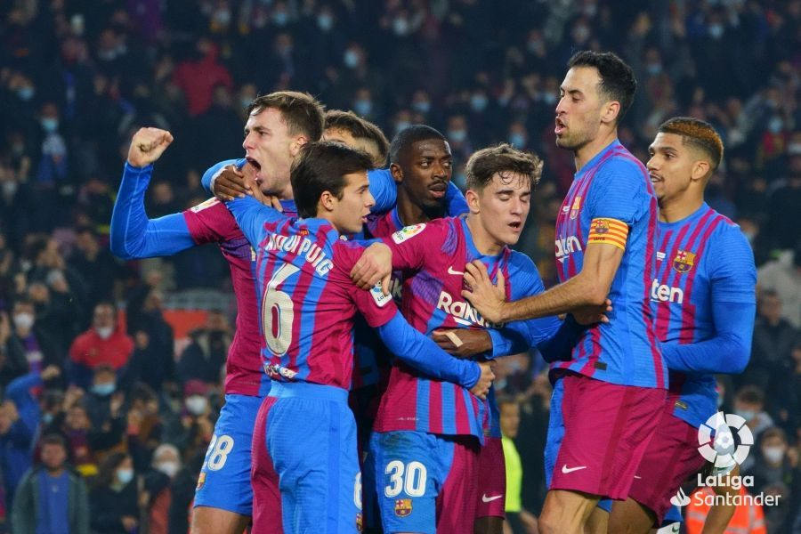

El Fútbol Club Barcelona (en catalán, Futbol Club Barcelona), conocido popularmente como Barça, es una entidad polideportiva con sede en Barcelona, España. Fue fundado como club de fútbol el 29 de noviembre de 1899 y registrado oficialmente el 5 de enero de 1903.
Tanto el club como sus hinchas reciben el apelativo de «culers» (pronunciado culés), y también, en referencia a sus colores, «azulgranas» o «blaugranas», tal como aparece en su himno, el «cant del Barça», el cual en su segunda línea menciona «som la gent blaugrana» (en castellano, «somos la gente azulgrana»). En su oficina de atención al barcelonista se atiende en los tres idiomas oficiales del club, que son el catalán, el castellano y el inglés.
A nivel institucional es uno de los cuatro clubes profesionales de fútbol del país cuya entidad jurídica no es la de sociedad anónima deportiva (S. A. D.), ya que su propiedad recae en sus más de 143.000 socios. Otra salvedad comparte con el Athletic Club y el Real Madrid Club de Fútbol al participar sin interrupción en la máxima categoría de la Liga Nacional de Fútbol Profesional, la Primera División de España, desde su establecimiento en 1929. En ella posee los honores de haber sido el primer campeón histórico de la competición, su segundo club con más títulos, y el de la máxima puntuación en una sola edición.
